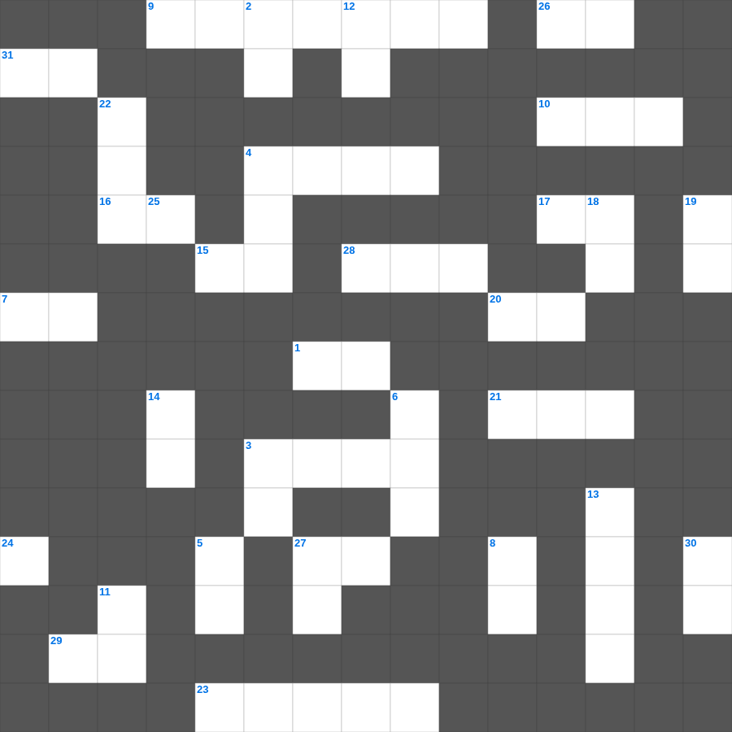

천국 소망
📌 서비스 정의
십자가로세로는 교회 주보와 주일학교에서 사용할 수 있는 성경 기반 가로세로 퍼즐 서비스입니다. 성경 인물, 사건, 핵심 구절을 바탕으로 제작되었습니다. 온라인 풀이 및 인쇄 기능을 제공합니다.
무료로 즐기는 천국 천국 성경퀴즈! 35개의 힌트로 구성된 가로세로 낱말 퍼즐입니다. PC와 모바일 모두 지원되며, 정답을 바로 확인할 수 있어 혼자서도 쉽게 풀 수 있습니다.

📝 가로 힌트
1. 너는 내게 부르짖으라 내가 네게 이것하겠고
3. 거짓 이것들이 일어나 많은 사람을 미혹함
4. 인간의 힘으로 구원받을 수 없음을 뜻함
7. 예수님의 육신의 아버지
9. 언약궤 안에 들어있는 아론의 물건
10. 예수님이 기도하러 자주 가신 산
12. 메시아의 탄생을 예언한 평화의 선지자
15. 다윗이 왕이 되기 전의 직업
16. 아브라함이 이삭 대신 드린 제물
17. 광야에서 이스라엘이 먹은 하늘 양식
20. 복음을 전하러 외국으로 나가는 일
21. 바울이 강가에서 루디아를 만난 성
23. 계시록의 일곱 교회 중 첫 번째 교회
26. 주 예수여 이것 오시옵소서
27. 영들 분별함과 각종 이것 말함
28. 세계 최초의 소방관은 누구일까요? (불 속에서 살아남음)
29. 너를 위하여 새긴 이것을 만들지 말고
31. 제물을 통째로 태워 드리는 제사
📝 세로 힌트
2. 곳곳에 기근과 이것이 있으리니
3. 언약궤를 덮고 있는 두 천사 형상
4. 복음을 전하는 자
5. 땅의 짐승과 기는 것(여섯째 날)
6. 가나 혼인잔치에서 물이 이것이 된 기적
8. 열 처녀 비유에서 준비해야 했던 것
11. 믿음은 바라는 것들의 이것
12. 기드온의 양털 시험
13. 성경에서 가장 넓은 강
14. 눈물을 그 눈에서 이것해 주시리니
18. 아합 왕이 뺏으려 했던 포도원 주인
19. 요셉이 보디발의 아내 유혹을 물리치고 간 곳
22. 어린 양의 보좌로부터 나오는 이것의 강
24. 가인이 아벨을 죽인 도구(전통적 해석)
25. 보라 세상 죄를 지고 가는 하나님의 어린 이것
27. 모든 것 위에 믿음의 이것을 가지고
30. 곡식으로 드리는 제사
🧑🏫 교회 교육 자료 활용
이 퍼즐은 주일학교 교재 추천 자료로 활용할 수 있고, 주일학교 주보에 넣기 좋은 분량으로 구성되어 있습니다. 수업용 주일학교 교안에 활동지로 붙이거나, 예배 후 복습용 주일학교 공과교재로 바로 사용할 수 있습니다.
🏷️ 키워드
천국 성경퀴즈, 천국, 십자가로세로, 성경퀴즈, 말씀퀴즈, 가로세로퍼즐, 주일학교 교재 추천, 주일학교 주보, 주일학교 교안, 주일학교 공과교재